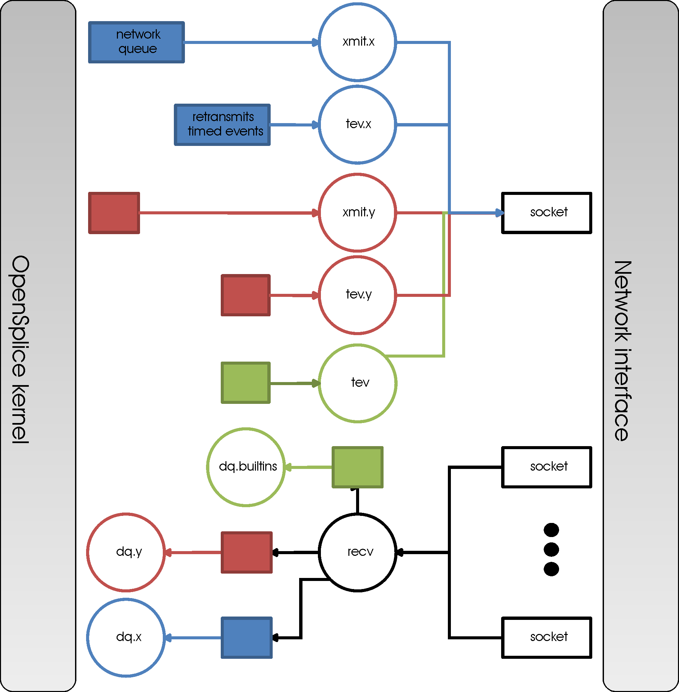
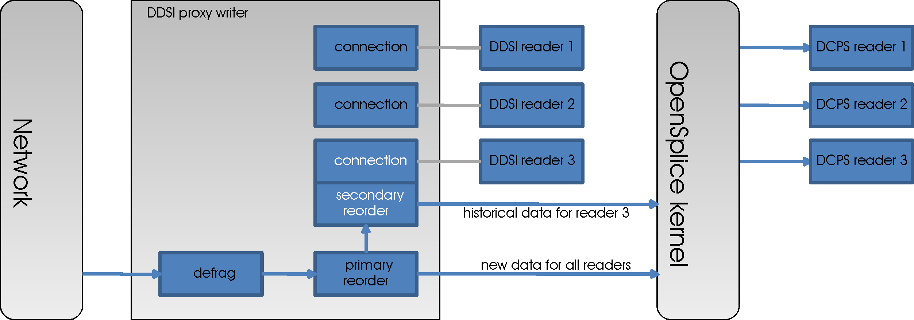

7. The DDSI2 and DDSI2E Networking Services¶
The purpose and scope of the Data-Distribution Service Interoperability Wire Protocol is to ensure that applications based on different vendors’ implementations of DDS can interoperate. The protocol was standardized by the OMG in 2008, and was designed to meet the specific requirements of data-distribution systems.
Features of the DDSI protocol include:
- Performance and Quality-of-Service properties to enable best-effort and reliable publish-subscribe communications for real-time applications over standard IP networks.
- Fault tolerance to allow the creation of networks without single points of failure.
- Plug-and-play Connectivity so that new applications and services are automatically discovered and applications can join and leave the network at any time without the need for reconfiguration.
- Configurability to allow balancing the requirements for reliability and timeliness for each data delivery.
- Scalability to enable systems to potentially scale to very large networks.
DDSI-Extended (DDSI2E) is an extended version of the DDSI2 networking service, giving extra features for:
- Network partitions: Network partitions provide the ability to use alternative multicast addresses for combinations of DCPS topics and partitions to separate out traffic flows, for example for routing or load reduction.
- Security: Encryption can be configured per network partition. This enables configuring encrypted transmission for subsets of the data.
- Bandwidth limiting and traffic scheduling: Any number of ‘network channels’ can be defined, each with an associated transport priority. Application data is routed via the network channel with the best matching priority. For each network channel, outgoing bandwidth limits can be set and the IP ‘differentiated services’ options can be controlled.
The remainder of this section gives background on these two services and describes how the various mechanisms and their configuration parameters interact.
Please refer to the Configuration section fully-detailed descriptions of:
- //OpenSplice/DDSI2Service
- //OpenSplice/DDSI2EService
7.1. DDSI Concepts¶
The DDSI 2.1 standard is very intimately related to the DDS 1.2 standard, with a clear correspondence between the entities in DDSI and those in DCPS. However, this correspondence is not one-to-one.
In this section we give a high-level description of the concepts of the DDSI specification, with hardly any reference to the specifics of the OpenSplice implementation, DDSI2, which are addressed in subsequent sections. This division was chosen to aid readers interested in interoperability to understand where the specification ends and the OpenSplice implementation begins.
7.1.1. Mapping of DCPS domains to DDSI domains¶
In DCPS, a domain is uniquely identified by a non-negative integer, the domain id. DDSI maps this domain id to UDP/IP port numbers to be used for communicating with the peer nodes — these port numbers are particularly important for the discovery protocol — and this mapping of domain ids to UDP/IP port numbers ensures that accidental cross-domain communication is impossible with the default mapping.
DDSI does not communicate the DCPS port number in the discovery protocol; it assumes that each domain id maps to a unique port number. While it is unusual to change the mapping, the specification requires this to be possible, and this means that two different DCPS domain ids can be mapped to a single DDSI domain.
7.1.2. Mapping of DCPS entities to DDSI entities¶
Each DCPS domain participant in a domain is mirrored in DDSI as a DDSI participant. These DDSI participants drive the discovery of participants, readers and writers in DDSI via the discovery protocols. By default each DDSI participant has a unique address on the network in the form of its own UDP/IP socket with a unique port number.
Any data reader or data writer created by a DCPS domain participant is mirrored in DDSI as a DDSI reader or writer. In this translation, some of the structure of the DCPS domain is lost, because DDSI has no knowledge of DCPS Subscribers and Publishers. Instead, each DDSI reader is the combination of the corresponding DCPS data reader and the DCPS subscriber it belongs to; similarly, each DDSI writer is a combination of the corresponding DCPS data writer and DCPS publisher. This corresponds to the way the DCPS built-in topics describe the DCPS data readers and data writers, as there are no built-in topics for describing the DCPS subscribers and publishers either.
In addition to the application-created readers and writers (referred to as ‘endpoints’), DDSI participants have a number of DDSI built-in endpoints used for discovery and liveliness checking/asserting. The most important ones are those absolutely required for discovery: readers and writers for the discovery data concerning DDSI participants, DDSI readers and DDSI writers. Some other ones exist as well, and a DDSI implementation can leave out some of these if it has no use for them. For example, if a participant has no writers, it doesn’t strictly need the DDSI built-in endpoints for describing writers, nor the DDSI built-in endpoint for learning of readers of other participants.
7.1.3. Reliable communication¶
Best-effort communication is simply a wrapper around UDP/IP: the packet(s) containing a sample are sent to the addresses at which the readers reside. No state is maintained on the writer. If a packet is lost, the reader will simply drop the sample and continue with the next one.
When reliable communication is used, the writer does maintain a copy of the sample, in case a reader detects it has lost packets and requests a retransmission. These copies are stored in the writer history cache (or WHC) of the DDSI writer. The DDSI writer is required to periodically send Heartbeats to its readers to ensure that all readers will learn of the presence of new samples in the WHC even when packets get lost.
If a reader receives a Heartbeat and detects it did not receive all samples, it requests a retransmission by sending an AckNack message to the writer, in which it simultaneously informs the writer up to what sample it has received everything, and which ones it has not yet received. Whenever the writer indicates it requires a response to a Heartbeat the readers will send an AckNack message even when no samples are missing. In this case, it becomes a pure acknowledgement.
The combination of these behaviours in principle allows the writer to remove old samples from its WHC when it fills up too far, and allows readers to always receive all data. A complication exists in the case of unresponsive readers, readers that do not respond to a Heartbeat at all, or that for some reason fail to receive some samples despite resending it. The specification leaves the way these get treated unspecified.
Note that while this Heartbeat/AckNack mechanism is very straightforward, the specification actually allows suppressing heartbeats, merging of AckNacks and retransmissions, etc.. The use of these techniques is required to allow for a performant DDSI implementation, whilst avoiding the need for sending redundant messages.
7.1.4. DDSI-specific transient-local behaviour¶
The above describes the essentials of the mechanism used for samples of the ‘volatile’ durability kind, but the DCPS specification also provides ‘transient-local’, ‘transient’ and ‘persistent’ data. Of these, the DDSI specification currently only covers transient-local, and this is the only form of durable data available when interoperating across vendors.
In DDSI, transient-local data is implemented using the WHC that is normally used for reliable communication. For transient-local data, samples are retained even when all readers have acknowledged them. With the default history setting of KEEP_LAST with history_depth = 1, this means that late-joining readers can still obtain the latest sample for each existing instance.
Naturally, once the DCPS writer is deleted (or disappears for whatever reason), the DDSI writer disappears as well, and with it, its history. For this reason, transient data is generally much to be preferred over transient-local data. In OpenSplice the durability service implements all three durability kinds without requiring any special support from the networking services, ensuring that the full set of durability features is always available between OpenSplice nodes.
7.1.5. Discovery of participants & endpoints¶
DDSI participants discover each other by means of the ‘Simple Participant Discovery Protocol’, or ‘SPDP’ for short. This protocol is based on periodically sending a message containing the specifics of the participant to a set of known addresses. By default, this is a standardised multicast address (239.255.0.1; the port number is derived from the domain id) that all DDSI implementations listen to.
Particularly important in the SPDP message are the unicast and multicast addresses at which the participant can be reached. Typically, each participant has a unique unicast address, which in practice means all participants on a node all have a different UDP/IP port number in their unicast address. In a multicast-capable network, it doesn’t matter what the actual address (including port number) is, because all participants will learn them through these SPDP messages.
The protocol does allow for unicast-based discovery, which requires listing the addresses of machines where participants may be located, and ensuring each participant uses one of a small set of port numbers. Because of this, some of the port numbers are derived not only from the domain id, but also from a ‘participant index’, which is a small non-negative integer, unique to a participant within a node. (The DDSI2 service adds an indirection and uses at most one participant index regardless of how many DCPS participants it handles.)
Once two participants have discovered each other, and both have matched the DDSI built-in endpoints their peer is advertising in the SPDP message, the ‘Simple Endpoint Discovery Protocol’ or ‘SEDP’ takes over, exchanging information on the DCPS data readers and data writers in the two participants.
The SEDP data is handled as reliable, transient-local data. Therefore, the SEDP writers send Heartbeats, the SEDP readers detect they have not yet received all samples and send AckNacks requesting retransmissions, the writer responds to these and eventually receives a pure acknowledgement informing it that the reader has now received the complete set.

Note that the discovery process necessarily creates a burst of traffic each time a participant is added to the system: all existing participants respond to the SPDP message, following which all start exchanging SEDP data.
7.2. OpenSplice DDSI2 specifics¶
7.2.1. Translating between OpenSplice and DDSI¶
Given that DDSI is the DDS interoperability specification, that the mapping between DCPS entities and DDSI entities is straightforward, and that OpenSplice is a full implementation of the DDS specification, one might expect that relationship between OpenSplice and its DDSI implementation, DDSI2, is trivial. Unfortunately, this is not the case, and it does show in a number of areas. A high-level overview such as this paragraph is not the place for the details of these cases, but they will be described in due course.
The root cause of these complexities is a difference in design philosophy between OpenSplice and the more recent DDSI.
DDSI is very strictly a peer-to-peer protocol at the level of individual endpoints, requiring lots of discovery traffic, and (at least when implemented naively) very bad scalability. It is exactly these three problems that OpenSplice was designed to avoid, and it does so successfully with its native RTNetworking service.
Because of this design for scalability and the consequent use of service processes rather than forcing everything into self-contained application processes, there are various ways in which DDSI2 has to translate between the two worlds. For example, queuing and buffering and, consequently, blocking behaviour are subtly different; DDSI2 needs to also perform local discovery of DCPS endpoints to gather enough information for faithfully representing the system in terms of DDSI, it needs to translate between completely different namespaces (native OpenSplice identifiers are very different from the GUIDs used by DDSI), and it needs to work around receiving asynchronous notifications for events one would expect to be synchronous in DDSI.
This Guide aims to not only provide guidance in configuring DDSI2, but also help in understanding the trade-offs involved.
7.2.2. Federated versus Standalone deployment¶
As has been described elsewhere (see the Overview in this Guide and also the Getting Started Guide), OpenSplice has multiple deployment models selectable in the configuration file (some of these require a license).
For DDSI2, there is no difference between the various models: it simply serves whatever DCPS participants are in the same ‘instance’, whether that instance be a federation of processes on a single node, all attached to a shared memory segment managed by a set of OpenSplice service processes on that node, or a standalone one in which a single process incorporates the OpenSplice services as libraries.
This Guide ignores the various deployment modes, using the terminology associated with the federated deployment mode because that mode is the driving force behind several of the user-visible design decisions in DDSI2. In consequence, for a standalone deployment, the term ‘node’ as used in this Guide refers to a single process.
7.2.3. Discovery behaviour¶
7.2.3.1. Local discovery and built-in topics¶
Inside one node, DDSI2 monitors the creation and deletion of local DCPS domain participants, data readers and data writers. It relies on the DCPS built-in topics to keep track of these events, and hence the use of DDSI requires that these topics are enabled in the configuration, which is the default (see the description of //OpenSplice/Domain/BuiltinTopics[@enabled] in the Configuration section).
If the built-in topics must be disabled to reduce network load, then the alternative is to instruct DDSI2 to completely ignore them using the DCPS topic/partition to network partition mapping available in the enhanced version, DDSI2E.
A separate issue is that of the DCPS built-in topics when interoperating with other implementations. In OpenSplice the built-in topics are first-class topics, i.e. the only difference between application topics and the built-in topics in OpenSplice is that the built-in topics are pre-defined and that they are published and used by the OpenSplice services. This in turn allows the RTNetworking service to avoid discovery of individual domain participants and endpoints, enabling its excellent scalability.
Conversely, DDSI defines a different and slightly extended representation for the information in the built-in topics as part of the discovery protocol specification, with a clear intent to locally reconstruct the samples of the built-in topics. Unfortunately, this also means that the DCPS built-in topics become a special case.
Taken together, DDSI2 is in the unfortunate situation of having to straddle two very different approaches. While local reconstruction of the DCPS built-in topics by DDSI2 is clearly possible, it would negatively impact the handling of transient data. Since handling transient data is one of the true strengths of OpenSplice, DDSI2 currently does not perform this reconstruction, with the unfortunate implication that loss of liveliness will not be handled fully when interoperating with another DDSI implementation.
7.2.3.2. Proxy participants and endpoints¶
DDSI2 is what the DDSI specification calls a ‘stateful’ implementation. Writers only send data to discovered readers and readers only accept data from discovered writers. (There is one exception: the writer may choose to multicast the data, and anyone listening will be able to receive it, if a reader has already discovered the writer but not vice-versa; it may accept the data even though the connection is not fully established yet.) Consequently, for each remote participant and reader or writer, DDSI2 internally creates a proxy participant, proxy reader or proxy writer. In the discovery process, writers are matched with proxy readers, and readers are matched with proxy writers, based on the topic and type names and the QoS settings.
Proxies have the same natural hierarchy that ‘normal’ DDSI entities have: each proxy endpoint is owned by some proxy participant, and once the proxy participant is deleted, all of its proxy endpoints are deleted as well. Participants assert their liveliness periodically, and when nothing has been heard from a participant for the lease duration published by that participant in its SPDP message, the lease becomes expired triggering a clean-up.
Under normal circumstances, deleting endpoints simply triggers disposes and unregisters in SEDP protocol, and, similarly, deleting a participant also creates special messages that allow the peers to immediately reclaim resources instead of waiting for the lease to expire.
7.2.3.3. Sharing of discovery information¶
DDSI2 is designed to service any number of participants, as one would expect for a service capable of being deployed in a federated system. This obviously means it is aware of all participants, readers and writers on a node. It also means that the discovery protocol as sketched earlier is rather wasteful: there is no need for each individual participant serviced by DDSI2 to run the full discovery protocol for itself.
Instead of implementing the protocol as suggested by the standard, DDSI2 shares all discovery activities amongst the participants, allowing one to add participants on a node with only a minimal impact on the system. It is even possible to have only a single DDSI participant on each node, which then becomes the virtual owner of all the endpoints serviced by that instance of DDSI2. (See Combining multiple participants and refer to the Configuration section for a detailed description of //OpenSplice/DDSI2Service/Internal/SquashParticipants.) In this latter mode, there is no discovery penalty at all for having many participants, but evidently, any participant-based liveliness monitoring will be affected.
Because other implementations of the DDSI specification may be written on the assumption that all participants perform their own discovery, it is possible to simulate that with DDSI2. It will not actually perform the discovery for each participant independently, but it will generate the network traffic as if it does.
Please refer to the Configuration section for detailed descriptions of:
- //OOpenSplice/DDSI2Service/Internal/BuiltinEndpointSet
- //OpenSplice/DDSI2Service/Internal/ConservativeBuiltinReaderStartup
However, please note that at the time of writing, we are not aware of any DDSI implementation requiring the use of these settings.)
By sharing the discovery information across all participants in a single node, each new participant or endpoint is immediately aware of the existing peers and will immediately try to communicate with these peers. This may generate some redundant network traffic if these peers take a significant amount of time for discovering this new participant or endpoint.
Another advantage (particularly in a federated deployment) is that the amount of memory required for discovery and the state of the remote entities is independent of the number of participants that exist locally.
7.2.3.4. Lingering writers¶
When an application deletes a reliable DCPS data writer, there is no guarantee that all its readers have already acknowledged the correct receipt of all samples. In such a case, DDSI2 lets the writer (and the owning participant if necessary) linger in the system for some time, controlled by the Internal/WriterLingerDuration option. The writer is deleted when all samples have been acknowledged by all readers or the linger duration has elapsed, whichever comes first.
The writer linger duration setting is currently not applied when DDSI2 is requested to terminate. In a federated deployment it is unlikely to visibly affect system behaviour, but in a standalone deployment data written just before terminating the application may be lost.
Please refer to the Configuration section for a detailed description of:
- //OpenSplice/DDSI2Service/Internal/WriterLingerDuration
7.2.3.5. Start-up mode¶
A similar issue exists when starting DDSI2: DDSI discovery takes time, and when data is written immediately after DDSI2 has started, it is likely that the discovery process hasn’t completed yet and some remote readers have not yet been discovered. This would cause the writers to throw away samples for lack of interest, even though matching readers already existed at the time of starting. For best-effort writers, this is perhaps surprising but still acceptable; for reliable writers, however, it would be very counter-intuitive.
Hence the existence of the so-called ‘start-up mode’, during which all volatile reliable writers are treated as-if they are transient-local writers. Transient-local data is meant to ensure samples are available to late-joining readers, the start-up mode uses this same mechanism to ensure late-discovered readers will also receive the data. This treatment of volatile data as-if it were transient-local happens entirely within DDSI2 and is invisible to the outside world, other than the availability of some samples that would not otherwise be available.
Once DDSI2 has completed its initial discovery, it has built up its view of the network and can locally match new writers against already existing readers, and consequently keeps any new samples published in a writer history cache because these existing readers have not acknowledged them yet. Hence why this mode is tied to the start-up of the DDSI2 service, rather than to that of an individual writer.
Unfortunately it is impossible to detect with certainty when the initial discovery process has been completed and therefore the time DDSI2 remains in this start-up mode is controlled by an option: General/StartupModeDuration.
While in general this start-up mode is beneficial, it is not always so. There are two downsides: the first is that during the start-up period, the writer history caches can grow significantly larger than one would normally expect; the second is that it does mean large amounts of historical data may be transferred to readers discovered relatively late in the process.
In a federated deployment on a local-area network, the likelihood of this behaviour causing problems is negligible, as in such a configuration the DDSI2 service typically starts seconds before the applications and besides the discovery times are short. The other extreme is a single-process deployment in a wide-area network, where the application starts immediately and discovery times may be long.
7.2.4. Writer history QoS and throttling¶
The DDSI specification heavily relies on the notion of a writer history cache (WHC) within which a sequence number uniquely identifies each sample. The original OpenSplice design has a different division of responsibilities between various components than what is assumed by the DDSI specification and this includes the WHC. Despite the different division, the resulting behaviour is the same.
DDSI2 bridges this divide by constructing its own WHC when needed. This WHC integrates two different indices on the samples published by a writer: one is on sequence number, which is used for retransmitting lost samples, and one is on key value and is used for retaining the current state of each instance in the WHC.
The index on key value allows dropping samples from the index on sequence number when the state of an instance is overwritten by a new sample. For transient-local, it conversely (also) allows retaining the current state of each instance even when all readers have acknowledged a sample.
The index on sequence number is required for retransmitting old data, and is therefore needed for all reliable writers. The index on key values is always needed for transient-local data, and can optionally be used for other writers using a history setting of KEEP_LAST with depth 1. (The Internal/AggressiveKeepLast1Whc setting controls this behaviour.) The advantage of an index on key value in such a case is that superseded samples can be dropped aggressively, instead of having to deliver them to all readers; the disadvantage is that it is somewhat more resource-intensive.
Writer throttling is based on the WHC size using a simple bang-bang controller. Once the WHC contains Internal/Watermarks/WhcHigh bytes in unacknowledged samples, it stalls the writer until the number of bytes in unacknowledged samples drops below Internal/Watermarks/WhcLow.
While ideally only the one writer would be stalled, the interface between the OpenSplice kernel and DDSI2 is such that other outgoing traffic may be stalled as well. See Unresponsive readers & head-of-stream blocking.
Please refer to the Configuration section for detailed descriptions of:
- //OpenSplice/DDSI2Service/Internal/AggressiveKeepLast1Whc
- //OpenSplice/DDSI2Service/Internal/Watermarks/WhcHigh
- //OpenSplice/DDSI2Service/Internal/Watermarks/WhcLow
7.2.5. Unresponsive readers & head-of-stream blocking¶
For reliable communications, DDSI2 must retain sent samples in the WHC until they have been acknowledged. Especially in case of a KEEP_ALL history kind, but also in the default case when the WHC is not aggressively dropping old samples of instances (Internal/AggressiveKeepLast1Whc), a reader that fails to acknowledge the samples timely will cause the WHC to run into resource limits.
The correct treatment suggested by the DDS specification is to simply take the writer history QoS setting, apply this to the DDSI2 WHC, and block the writer up to its ‘max_blocking_time’ QoS setting. However, the scalable architecture of OpenSplice renders this simple approach infeasible because of the division of labour between the application processes and the various services. Of course, even if it were a possible approach, the problem would still not be gone entirely, as one unresponsive (for whatever reason) reader would still be able to prevent the writer from making progress and thus prevent the system from making progress if the writer is a critical one.
Because of this, once DDSI2 hits a resource limit on a WHC, it blocks the sequence of outgoing samples for up to Internal/ResponsivenessTimeout. If this timeout is set larger than roughly the domain expiry time (//OpenSplice/Domain/Lease/ExpiryTime), it may cause entire nodes to lose liveliness. The enhanced version, DDSI2E, has the ability to use multiple queues and can avoid this problem; please refer to Channel configuration.
Any readers that fail to acknowledge samples in time will be marked ‘unresponsive’ and be treated as best-effort readers until they start acknowledging data again. Readers that are marked unresponsive by a writer may therefore observe sample loss. The ‘sample lost’ status of the data readers can be used to detect this.
One particular case where this can easily occur is if a reader becomes unreachable, for example because a network cable is unplugged. While this will eventually cause a lease to expire, allowing the proxy reader to be removed and the writer to no longer retain data for it, in the meantime the writer can easily run into a WHC limit. This will then cause the writer to mark the reader as unresponsive, and the system will continue to operate. The presence of unacknowledged data in a WHC as well as the existence of unresponsive readers will force the publication of Heartbeats, and so unplugging a network cable will typically induce a stream of Heartbeats from some writers.
Another case where this can occur is with a very fast writer, and a reader on a slow host, and with large buffers on both sides: then the time needed by the receiving host to process the backlog can become longer than this responsiveness timeout, causing the writer to mark the reader as unresponsive, in turn causing the backlog to be dropped. This allows the reader catch up, at which point it once again acknowledges data promptly and will be considered responsive again, causing a new backlog to build up, and so on.
Please refer to the Configuration section for detailed descriptions of:
- //OpenSplice/DDSI2Service/Internal/AggressiveKeepLast1Whc
- //OpenSplice/DDSI2Service/Internal/ResponsivenessTimeout
- //OpenSplice/Domain/Lease/ExpiryTime
7.2.6. Handling of multiple partitions and wildcards¶
7.2.6.1. Publishing in multiple partitions¶
A variety of design choices allow OpenSplice in combination with its RTNetworking service to be fully dynamically discovered, yet without requiring an expensive discovery protocol. A side effect of these choices is that a DCPS writer publishing a single sample in multiple partitions simultaneously will be translated by the current version of DDSI2 as a writer publishing multiple identical samples in all these partitions, but with unique sequence numbers.
When DDSI2 is used to communicate between OpenSplice nodes, this is not an application-visible issue, but it is visible when interoperating with other implementations. Fortunately, publishing in multiple partitions is rarely a wise choice in a system design.
Note that this only concerns publishing in multiple partitions, subscribing in multiple partitions works exactly as expected, and is also a far more common system design choice.
7.2.6.2. Wildcard partitions¶
DDSI2 fully implements publishing and subscribing using partition wildcards, but depending on many (deployment time and application design) details, the use of partition wildcards for publishing data can easily lead to the replication of data as mentioned in the previous subsection (Publishing in multiple partitions).
Secondly, because DDSI2 implements transient-local data internally in a different way from the way the OpenSplice durability service does, it is strongly recommended that the combination of transient-local data and publishing using partition wildcards be avoided completely.
7.3. Network and discovery configuration¶
7.3.1. Networking interfaces¶
DDSI2 uses a single network interface, the ‘preferred’ interface, for transmitting its multicast packets and advertises only the address corresponding to this interface in the DDSI discovery protocol.
To determine the default network interface, DDSI2 ranks the eligible interfaces by quality, and then selects the interface with the highest quality. If multiple interfaces are of the highest quality, it will select the first enumerated one. Eligible interfaces are those that are up and have the right kind of address family (IPv4 or IPv6). Priority is then determined as follows:
- interfaces with a non-link-local address are preferred over those with a link-local one;
- multicast-capable is preferred, or if none is available
- non-multicast capable but neither point-to-point, or if none is available
- point-to-point, or if none is available
- loopback
If this procedure doesn’t select the desired interface automatically, it can be overridden by setting General/NetworkInterfaceAddress to either the name of the interface, the IP address of the host on the desired interface, or the network portion of the IP address of the host on the desired interface. An exact match on the address is always preferred and is the only option that allows selecting the desired one when multiple addresses are tied to a single interface.
Please refer to the Configuration section for a detailed description of:
- //OpenSplice/NetworkService/General/NetworkInterfaceAddress
The default address family is IPv4, setting General/UseIPv6 will change this to IPv6. Currently, DDSI2 does not mix IPv4 and IPv6 addressing. Consequently, all DDSI participants in the network must use the same addressing mode. When interoperating, this behaviour is the same, i.e. it will look at either IPv4 or IPv6 addresses in the advertised address information in the SPDP and SEDP discovery protocols.
IPv6 link-local addresses are considered undesirable because they need to be published and received via the discovery mechanism, but there is in general no way to determine to which interface a received link-local address is related.
If IPv6 is requested and the preferred interface has a non-link-local address, DDSI2 will operate in a ‘global addressing’ mode and will only consider discovered non-link-local addresses. In this mode, one can select any set of interface for listening to multicasts. Note that this behaviour is essentially identical to that when using IPv4, as IPv4 does not have the formal notion of address scopes that IPv6 has. If instead only a link-local address is available, DDSI2 will run in a ‘link-local addressing’ mode. In this mode it will accept any address in a discovery packet, assuming that a link-local address is valid on the preferred interface. To minimise the risk involved in this assumption, it only allows the preferred interface for listening to multicasts.
When a remote participant publishes multiple addresses in its SPDP message (or in SEDP messages, for that matter), it will select a single address to use for communicating with that participant. The address chosen is the first eligible one on the same network as the locally chosen interface, else one that is on a network corresponding to any of the other local interfaces, and finally simply the first one. Eligibility is determined in the same way as for network interfaces.
7.3.1.1. Multicasting¶
DDSI2 allows configuring to what extent multicast is to be used:
- whether to use multicast for data communications,
- whether to use multicast for participant discovery,
- on which interfaces to listen for multicasts.
It is advised to allow multicasting to be used. However, if there are restrictions on the use of multicasting, or if the network reliability is dramatically different for multicast than for unicast, it may be attractive to disable multicast for normal communications. In this case, setting General/AllowMulticast to false will force DDSI2 to use unicast communications for everything except the periodic distribution of the participant discovery messages.
If at all possible, it is strongly advised to leave multicast-based participant discovery enabled, because that avoids having to specify a list of nodes to contact, and it furthermore reduces the network load considerably. However, if need be, one can disable the participant discovery from sending multicasts by setting Internal/SuppressSpdpMulticast to true.
To disable incoming multicasts, or to control from which interfaces multicasts are to be accepted, one can use the General/MulticastRecvInterfaceAddresses setting. This allows listening on no interface, the preferred, all or a specific set of interfaces.
Please refer to the Configuration section for detailed descriptions of:
- //OpenSplice/DDSI2Service/General/AllowMulticast
- //OpenSplice/DDSI2Service/Internal/SuppressSpdpMulticast
- //OpenSplice/DDSI2Service/General/MulticastRecvNetworkInterfaceAddress
7.3.1.2. Discovery configuration¶
7.3.1.2.1. Discovery addresses¶
The DDSI discovery protocols, SPDP for the domain participants and SEDP for their endpoints, usually operate well without any explicit configuration. Indeed, the SEDP protocol never requires any configuration.
DDSI2 by default uses the domain id as specified in //OpenSplice/Domain/Id but allows overriding it for special configurations using the Discovery/DomainId setting. The domain id is the basis for all UDP/IP port number calculations, which can be tweaked when necessary using the configuration settings under Discovery/Ports. It is however rarely necessary to change the standardised defaults.
The SPDP protocol periodically sends, for each domain participant, an SPDP sample to a set of addresses, which by default contains just the multicast address, which is standardised for IPv4 (239.255.0.1), but not for IPv6 (it uses ff02::ffff:239.255.0.1). The actual address can be overridden using the Discovery/SPDPMulticastAddress setting, which requires a valid multicast address.
In addition (or as an alternative) to the multicast-based discovery, any number of unicast addresses can be configured as addresses to be contacted by specifying peers in the Discovery/Peers section. Each time an SPDP message is sent, it is sent to all of these addresses.
Default behaviour of DDSI2 is to include each IP address several times in the set, each time with a different UDP port number (corresponding to another participant index), allowing at least several applications to be present on these hosts.
Obviously, configuring a number of peers in this way causes a large burst of packets to be sent each time an SPDP message is sent out, and each local DDSI participant causes a burst of its own. Most of the participant indices will not actually be use, making this rather wasteful behaviour.
DDSI2 allows explicitly adding a port number to the IP address, formatted as IP:PORT, to avoid this waste, but this requires manually calculating the port number. In practice it also requires fixing the participant index using Discovery/ParticipantIndex (see the description of ‘PI’ in Controlling port numbers) to ensure that the configured port number indeed corresponds to the remote DDSI2 (or other DDSI implementation), and therefore is really practicable only in a federated deployment.
Please refer to the Configuration section for detailed descriptions of:
- //OpenSplice/Domain/Id
- //OpenSplice/DDSI2Service/Discovery/DomainId
- //OpenSplice/DDSI2Service/Discovery/SPDPMulticastAddress
- //OpenSplice/DDSI2Service/Discovery/Peers
- //OpenSplice/DDSI2Service/Discovery/ParticipantIndex
7.3.1.2.2. Asymmetrical discovery¶
On reception of an SPDP packet, DDSI2 adds the addresses advertised in that SPDP packet to this set, allowing asymmetrical discovery. In an extreme example, if SPDP multicasting is disabled entirely, host A has the address of host B in its peer list and host B has an empty peer list, then B will eventually discover A because of an SPDP message sent by A, at which point it adds A’s address to its own set and starts sending its own SPDP message to A, allowing A to discover B. This takes a bit longer than normal multicast based discovery, though.
7.3.1.2.3. Timing of SPDP packets¶
The interval with which the SPDP packets are transmitted is configurable as well, using the Discovery/SPDPInterval setting. A longer interval reduces the network load, but also increases the time discovery takes, especially in the face of temporary network disconnections.
7.3.1.2.4. Endpoint discovery¶
Although the SEDP protocol never requires any configuration, the network partitioning of OpenSplice DDSI2E does interact with it: so-called ‘ignored partitions’ can be used to instruct DDSI2 to completely ignore certain DCPS topic and partition combinations, which will prevent DDSI2 from forwarding data for these topic/partition combinations to and from the network.
While it is rarely necessary, it is worth mentioning that by overriding the domain id used by DDSI in conjunction with ignored partitions and unique SPDP multicast addresses allows partitioning the data and giving each partition its own instance of DDSI2.
7.3.2. Combining multiple participants¶
In an OpenSplice standalone deployment the various configured services, such as spliced and DDSI2, still retain their identity by creating their own DCPS domain participants. DDSI2 faithfully mirrors all these participants in DDSI, and it will appear at the DDSI level as if there is a large system with many participants, whereas in reality there are only a few application participants.
The Internal/SquashParticipants option can be used to simulate the existence of only one participant, the DDSI2 service itself, which owns all endpoints on that node. This reduces the background messages because far fewer liveliness assertions need to be sent.
Clearly, the liveliness monitoring features that are related to domain participants will be affected if multiple DCPS domain participants are combined into a single DDSI domain participant. The OpenSplice services all use a liveliness QoS setting of AUTOMATIC, which works fine.
In a federated deployment, the effect of this option is to have only a single DDSI domain participant per node. This is of course much more scalable, but in no way resembles the actual structure of the system if there are in fact multiple application processes running on that node.
However, in OpenSplice the built-in topics are not derived from the DDSI discovery, and hence in an OpenSplice-only network the use of the Internal/SquashParticipants setting will not result in any loss of information in the DCPS API or in the OpenSplice tools such as the Tester.
When interoperability with another vendor is not needed, enabling the SquashParticipants option is often a good choice.
Please refer to the Configuration section for a detailed description of:
- //OpenSplice/DDSI2Service/Internal/SquashParticipants
7.3.3. Controlling port numbers¶
The port numbers used by DDSI2 are determined as follows, where the first two items are given by the DDSI specification and the third is unique to DDSI2 as a way of serving multiple participants by a single DDSI instance:
- 2 ‘well-known’ multicast ports: B and B+1
- 2 unicast ports at which only this instance of DDSI2 is listening: B+PG*PI+10 and B+PG*PI+11
- 1 unicast port per domain participant it serves, chosen by the kernel from the anonymous ports, i.e. >= 32768
where:
- B is Discovery/Ports/Base (7400) + Discovery/Ports/DomainGain (250) * Domain/Id
- PG is Discovery/Ports/ParticipantGain (2)
- PI is Discovery/ParticipantIndex
The default values, taken from the DDSI specification, are in parentheses. There are actually even more parameters, here simply turned into constants as there is absolutely no point in ever changing these values; however, they are configurable and the interested reader is referred to the DDSI 2.1 specification, section 9.6.1.
PI is the most interesting, as it relates to having multiple instances of DDSI2 in the same domain on a single node. In a federated deployment, this never happens (exceptional cases excluded). Its configured value is either ‘auto’, ‘none’ or a non-negative integer. This setting matters:
- When it is ‘auto’ (which is the default), DDSI2 probes UDP port numbers on start-up, starting with PI = 0, incrementing it by one each time until it finds a pair of available port numbers, or it hits the limit. The maximum PI it will ever choose is currently still hard-coded at 9 as a way of limiting the cost of unicast discovery. (It is recognised that this limit can cause issues in a standalone deployment.)
- When it is ‘none’ it simply ignores the ‘participant index’ altogether and asks the kernel to pick two random ports (>= 32768). This eliminates the limit on the number of standalone deployments on a single machine and works just fine with multicast discovery while complying with all other parts of the specification for interoperability. However, it is incompatible with unicast discovery.
- When it is a non-negative integer, it is simply the value of PI in the above calculations. If multiple instances of DDSI2 on a single machine are needed, they will need unique values for PI, and so for standalone deployments this particular alternative is hardly useful.
Clearly, to fully control port numbers, setting Discovery/ParticipantIndex (= PI) to a hard-coded value is the only possibility. In a federated deployment this is an option that has very few downsides, and generally 0 will be a good choice.
By fixing PI, the port numbers needed for unicast discovery are fixed as well. This allows listing peers as IP:PORT pairs, significantly reducing traffic, as explained in the preceding subsection.
The other non-fixed ports that are used are the per-domain participant ports, the third item in the list. These are used only because there exist some DDSI implementations that assume each domain participant advertises a unique port number as part of the discovery protocol, and hence that there is never any need for including an explicit destination participant id when intending to address a single domain participant by using its unicast locator. DDSI2 never makes this assumption, instead opting to send a few bytes extra to ensure the contents of a message are all that is needed. With other implementations, you will need to check.
If all DDSI implementations in the network include full addressing information in the messages, like DDSI2, then the per-domain participant ports serve no purpose at all. The default false setting of Compatibility/ManySocketsMode disables the creation of these ports.
This setting has a few other side benefits as well, as there will generally be more participants using the same unicast locator, improving the chances for requiring but a single unicast even when addressing a multiple participants in a node. The obvious case where this is beneficial is when one host has not received a multicast.
Please refer to the Configuration section for detailed descriptions of:
- //OpenSplice/DDSI2Service/Discovery/Ports/Base
- //OpenSplice/DDSI2Service/Discovery/Ports/DomainGain
- //OpenSplice/DDSI2Service/Discovery/Ports/ParticipantGain
- //OpenSplice/DDSI2Service/Discovery/ParticipantIndex
- //OpenSplice/DDSI2Service/Compatibility/ManySocketsMode
7.3.4. Coexistence with OpenSplice RTNetworking¶
DDSI2 has a special mode, configured using General/CoexistWithNativeNetworking, to allow it to operate in conjunction with OpenSplice RTNetworking: in this mode DDSI2 only handles packets sent by other vendors’ implementations, allowing all intra-OpenSplice traffic to be handled by the RTNetworking service while still providing interoperability with other vendors.
Please refer to the Configuration section for a detailed description of:
- //OpenSplice/DDSI2Service/General/CoexistWithNativeNetworking
7.4. Data path configuration¶
7.4.1. Data path architecture¶
The data path in DDSI2 consists of a transmitting and a receiving side. The main path in the transmit side accepts data to be transmitted from the OpenSplice kernel via a network queue and administrates and formats the data for transmission over the network.
The secondary path handles asynchronous events such as the periodic generation of writer Heartbeats and the transmitting of acknowledgement messages from readers to writers, in addition to handling the retransmission of old data on request. These requests can originate in packet loss, but also in requests for historical data from transient-local readers.
The diagram Data flow using two channels gives an overview of the main data flow and the threads in a configuration using two channels. Configuring multiple channels is an enhanced feature that is available only in DDSI2E, but the principle is the same in both variants.
Data flow using two channels
{kind=link}
7.4.2. Transmit-side configuration¶
7.4.2.1. Transmit processing¶
DDSI2E divides the outgoing data stream into prioritised channels. These channels are handled completely independently, effectively allowing mapping DDS transport priorities to operating system thread priorities. Although the ability to define multiple channels is limited to DDSI2E, DDSI2 uses the same mechanisms but is restricted to what in DDSI2E is the default channel if none are configured explicitly. For details on configuring channels, see Channel configuration.
Each channel has its own transmit thread, draining a queue with samples to be transmitted from the OpenSplice kernel. The maximum size of the queue can be configured per channel, and the default for the individual channels is configured using the Sizing/NetworkQueueSize setting. In DDSI2, this setting simply controls the queue size, as the default channel of DDSI2E has the default queue size. A larger queue size increases the potential latency and (shared) memory requirements, but improves the possibilities for smoothing out traffic if the applications publish it in bursts.
Once a networking service has taken a sample from the queue, it takes responsibility for it. Consequently, if it is to be sent reliably and there are insufficient resources to store it in the WHC, it must wait for resources to become available. See Unresponsive readers & head-of-stream blocking.
The DDSI control messages (Heartbeat, AckNack, etc.) are sent by a thread dedicated to handling timed events and asynchronous transmissions, including retransmissions of samples on request of a reader. This thread is known as the ‘timed-event thread’ and there is at least one such thread, but each channel can have its own one.
DDSI2E can also perform traffic shaping and bandwidth limiting, configurable per channel, and with independent limits for data on the one hand and control and retransmissions on the other hand.
7.4.2.2. Retransmit merging¶
A remote reader can request retransmissions whenever it receives a Heartbeat and detects samples are missing. If a sample was lost on the network for many or all readers, the next heartbeat is likely to trigger a ‘storm’ of retransmission requests. Thus, the writer should attempt merging these requests into a multicast retransmission, to avoid retransmitting the same sample over & over again to many different readers. Similarly, while readers should try to avoid requesting retransmissions too often, in an interoperable system the writers should be robust against it.
In DDSI2, upon receiving a Heartbeat that indicates samples are missing, a reader will schedule a retransmission request to be sent after Internal/NackDelay, or combine it with an already scheduled request if possible. Any samples received in between receipt of the Heartbeat and the sending of the AckNack will not need to be retransmitted.
Secondly, a writer attempts to combine retransmit requests in two different ways. The first is to change messages from unicast to multicast when another retransmit request arrives while the retransmit has not yet taken place. This is particularly effective when bandwidth limiting causes a backlog of samples to be retransmitted. The behaviour of the second can be configured using the Internal/RetransmitMerging setting. Based on this setting, a retransmit request for a sample is either honoured unconditionally, or it may be suppressed (or ‘merged’) if it comes in shortly after a multicasted retransmission of that very sample, on the assumption that the second reader will likely receive the retransmit, too. The Internal/RetransmitMergingPeriod controls the length of this time window.
Please refer to the Configuration section for detailed descriptions of:
- //OpenSplice/DDSI2Service/Internal/NackDelay
- //OpenSplice/DDSI2Service/Internal/RetransmitMerging
- //OpenSplice/DDSI2Service/Internal/RetransmitMergingPeriod
7.4.2.3. Retransmit backlogs¶
Another issue is that a reader can request retransmission of many samples at once. When the writer simply queues all these samples for retransmission, it may well result in a huge backlog of samples to be retransmitted. As a result, the ones near the end of the queue may be delayed by so much that the reader issues another retransmit request. DDSI2E provides bandwidth limiting, which makes the situation even worse, as it can significantly increase the time it takes for a sample to be sent out once it has been queued for retransmission.
Therefore, DDSI2 limits the number of samples queued for retransmission and ignores (those parts of) retransmission requests that would cause the retransmit queue to contain too many samples or take too much time to process. There are two settings governing the size of these queues, and the limits are applied per timed-event thread (i.e. the global one, and typically one for each configured channel with limited bandwidth when using DDSI2E). The first is Internal/MaxQueuedRexmitMessages, which limits the number of retransmit messages, the second Internal/MaxQueuedRexmitBytes which limits the number of bytes. The latter is automatically set based on the combination of the allowed transmit bandwidth and the Internal/NackDelay setting, as an approximation of the likely time until the next potential retransmit request from the reader.
Please refer to the Configuration section for detailed descriptions of:
- //OpenSplice/DDSI2Service/Internal/MaxQueuedRexmitMessages
- //OpenSplice/DDSI2Service/Internal/MaxQueuedRexmitBytes
- //OpenSplice/DDSI2Service/Internal/NackDelay
7.4.2.4. Controlling fragmentation¶
Samples in DDS can be arbitrarily large, and will not always fit within a single datagram. DDSI has facilities to fragment samples so they can fit in UDP datagrams, and similarly IP has facilities to fragment UDP datagrams to into network packets. The DDSI specification states that one must not unnecessarily fragment at the DDSI level, but DDSI2 simply provides a fully configurable behaviour.
If the serialised form of a sample is at least Internal/FragmentSize, it will be fragmented using the DDSI fragmentation. All but the last fragment will be exactly this size; the last one may be smaller.
Control messages, non-fragmented samples, and sample fragments are all subject to packing into datagrams before sending it out on the network, based on various attributes such as the destination address, to reduce the number of network packets. This packing allows datagram payloads of up to Internal/MaxMessageSize, overshooting this size if the set maximum is too small to contain what must be sent as a single unit. Note that in this case, there is a real problem anyway, and it no longer matters where the data is rejected, if it is rejected at all. UDP/IP header sizes are not taken into account in this maximum message size.
The IP layer then takes this UDP datagram, possibly fragmenting it into multiple packets to stay within the maximum size the underlying network supports. A trade-off to be made is that while DDSI fragments can be retransmitted individually, the processing overhead of DDSI fragmentation is larger than that of UDP fragmentation.
Please refer to the Configuration section for detailed descriptions of:
- //OpenSplice/DDSI2Service/Internal/FragmentSize
- //OpenSplice/DDSI2Service/Internal/MaxMessageSize
7.4.3. Receive-side configuration¶
7.4.3.1. Receive processing¶
Receiving of data is split into multiple threads, as also depicted in the overall DDSI2 data path diagram Data flow using two channels:
- A single receive thread responsible for retrieving network packets and running the protocol state machine;
- A delivery thread dedicated to processing DDSI built-in data: participant discovery, endpoint discovery and liveliness assertions;
- One or more delivery threads dedicated to the handling of application data: deserialisation and delivery to the DCPS data reader caches.
The receive thread is responsible for retrieving all incoming network packets, running the protocol state machine, which involves scheduling of AckNack and Heartbeat messages and queueing of samples that must be retransmitted, and for defragmenting and ordering incoming samples.
For a specific proxy writer—the local manifestation of a remote DDSI data writer— with a number of data readers, the organisation is as shown in the diagram Proxy writer with multiple data readers.
Proxy writer with multiple data readers
{kind=link}
Fragmented data first enters the defragmentation stage, which is per proxy writer. The number of samples that can be defragmented simultaneously is limited, for reliable data to Internal/DefragReliableMaxSamples and for unreliable data to Internal/DefragUnreliableMaxSamples.
Samples (defragmented if necessary) received out of sequence are buffered, primarily per proxy writer, but, secondarily, per reader catching up on historical (transient-local) data. The size of the first is limited to Internal/PrimaryReorderMaxSamples, the size of the second to Internal/SecondaryReorderMaxSamples.
In between the receive thread and the delivery threads sit queues, of which the maximum size is controlled by the Internal/DeliveryQueueMaxSamples setting. Generally there is no need for these queues to be very large, their primary function is to smooth out the processing when batches of samples become available at once, for example following a retransmission.
When any of these receive buffers hit their size limit, DDSI2 will drop incoming (fragments of) samples and/or buffered (fragments of) samples to ensure the receive thread can continue to make progress. Such dropped samples will eventually be retransmitted.
Please refer to the Configuration section for detailed descriptions of:
- //OpenSplice/DDSI2Service/Internal/DefragReliableMaxSamples
- //OpenSplice/DDSI2Service/Internal/DefragUnreliableMaxSamples
- //OpenSplice/DDSI2Service/Internal/PrimaryReorderMaxSamples
- //OpenSplice/DDSI2Service/Internal/SecondaryReorderMaxSamples
- //OpenSplice/DDSI2Service/Internal/DeliveryQueueMaxSamples
7.4.3.2. Minimising receive latency¶
In low-latency environments, a few microseconds can be gained by processing the application data directly in the receive thread, or synchronously with respect to the incoming network traffic, instead of queueing it for asynchronous processing by a delivery thread. This happens for data transmitted with the max_latency QoS setting at most a configurable value and the transport_priority QoS setting at least a configurable value. By default, these values are 0 and the maximum transport priority, effectively disabling synchronous delivery for all but the most important and urgent data.
Please refer to the Configuration section for detailed descriptions of:
- //OpenSplice/DDSI2Service/Internal/SynchronousDeliveryLatencyBound
- //OpenSplice/DDSI2Service/Internal/SynchronousDeliveryPriorityThreshold
7.4.4. Direction-independent settings¶
7.4.4.1. Maximum sample size¶
DDSI2 provides a setting, Internal/MaxSampleSize, to control the maximum size of samples that the service is willing to process. The size is the size of the (CDR) serialised payload, and the limit holds both for built-in data and for application data. The (CDR) serialised payload is never larger than the in-memory representation of the data.
On the transmitting side, samples larger than MaxSampleSize are dropped with a warning in the OpenSplice info log. DDSI2 behaves as if the sample never existed. The current structure of the interface between the OpenSplice kernel and the OpenSplice networking services unfortunately prevents DDSI2 from properly reporting this back to the application that wrote the sample, so the only guaranteed way of detecting the dropping of the sample is by checking the info log.
Similarly, on the receiving side, samples large than MaxSampleSize are dropped, and this is done as early as possible, immediately following the reception of a sample or fragment of one, to prevent any resources from being claimed for longer than strictly necessary. Where the transmitting side completely ignores the sample, on the receiving side DDSI2 pretends the sample has been correctly received and, at the DDSI2 level, acknowledges reception to the writer when asked. This allows communication to continue.
When the receiving side drops a sample, readers will get a ‘sample lost’ notification at the next sample that does get delivered to those readers. This condition means that again checking the info log is ultimately the only truly reliable way of determining whether samples have been dropped or not.
While dropping samples (or fragments thereof) as early as possible is beneficial from the point of view of reducing resource usage, it can make it hard to decide whether or not dropping a particular sample has been recorded in the log already. Under normal operational circumstances, DDSI2 will report a single event for each sample dropped, but it may on occasion report multiple events for the same sample.
Finally, it is technically allowed to set MaxSampleSize to very small sizes, even to the point that the discovery data can’t be communicated anymore. The dropping of the discovery data will be duly reported, but the usefulness of such a configuration seems doubtful.
Please refer to the Configuration section for a detailed description of:
- //OpenSplice/DDSI2Service/Internal/MaxSampleSize
7.5. DDSI2E Enhanced features¶
7.5.1. Introduction to DDSI2E¶
DDSI2E is an enhanced version of the DDSI2 service, adding three major features:
- Channels: parallel processing of independent data stream, with prioritisation based on the transport priority setting of the data writers, and supporting traffic-shaping of outgoing data;
- Network partitions: use of special multicast addresses for some partition-topic combinations as well as allowing ignoring data; and
- Encryption: encrypting all traffic for a certain network partition. This section provides details on the configuration of these three features.
7.5.2. Channel configuration¶
7.5.2.1. Channel configuration overview¶
DDSI2E allows defining channels, which are independent data paths within the DDSI service. OpenSplice chooses a channel based by matching the transport priority QoS setting of the data writer with the threshold specified for the various channels. Because each channel has a set of dedicated threads to perform the processing and the thread priorities can all be configured, it is straightforward to guarantee that samples from high-priority data writers will get precedence over those from low-priority data throughout the service stack.
A second aspect to the use of channels is that the head-of-line blocking mentioned in Unresponsive readers & head-of-stream blocking. Unresponsive readers & head-of-stream blocking is per channel, guaranteeing that a high-priority channel will not be disrupted by an unresponsive reader of low-priority data.
The channel-specific threads perform essentially all processing (serialisation, writer history cache management, deserialisation, delivery to DCPS data readers, etc.), but there still is one shared thread involved. This is the receive thread (‘recv’) that demultiplexes incoming packets and implements the protocol state machine. The receive thread only performs minimal work on each incoming packet, and never has to wait for the processing of user data.
The existence of the receive thread is the only major difference between DDSI2E channels and those of the OpenSplice RTNetworking service: in the RTNetworking service, each thread is truly independent. This change is the consequence of DDSI2E interoperating with implementations that are not aware of channels and with DDSI2E nodes that have differently configured channels, unlike the RTNetworking service where all nodes must use exactly the same channel definitions.
When configuring multiple channels, it is recommended to set the CPU priority of the receive thread to at least that of the threads of the highest priority channel, to ensure the receive thread will be scheduled in promptly.
If no channels are defined explicitly, a single, default channel is used. In DDSI2 (rather than DDSI2E), the processing is as if only this default channel exists.
7.5.2.2. Transmit side¶
For each discovered local data writer, DDSI2E determines the channel to use. This is the channel with the lowest threshold priority of all channels that have a threshold priority that is higher than the writer’s transport priority. If there is no such channel, i.e. the writer has a transport priority higher than the highest channel threshold, the channel with the highest threshold is used.
Each channel has its own network queue into which the OpenSplice kernel writes samples to be transmitted and that DDSI2E reads. The size of this queue can be set for each channel independently by using Channels/Channel/QueueSize, with the default taken from the global Sizing/NetworkQueueSize.
Bandwidth limiting and traffic shaping are configured per channel as well. The following parameters are configurable:
- bandwidth limit
- auxiliary bandwidth limit
- IP QoS settings
The traffic shaping is based on a `leaky bucket’ algorithm: transmit credits are added at a constant rate, the total transmit credit is capped, and each outgoing packet reduces the available transmit credit. Outgoing packets must wait until enough transmit credits are available.
Each channel has two separate credits: data and auxiliary. The data credit is used strictly for transmitting fresh data (i.e. directly corresponding to writes, disposes, etc.) and control messages directly caused by transmitting that data. This credit is configured using the Channels/Channel/DataBandwidthLimit setting. By default, a channel is treated as if it has infinite data credit, disabling traffic shaping.
The auxiliary credit is used for everything else: asynchronous control data & retransmissions, and is configured using the Channels/Channel/AuxiliaryBandwidthLimit setting.
When an auxiliary bandwidth limit has been set explicitly, or when one explicitly sets, e.g. a thread priority for a thread named ‘tev.channel-name’, an independent event thread handles the generation of auxiliary data for that channel. But if neither is given, the global event thread instead handles all auxiliary data for the channel.
The global event thread has an auxiliary credit of its own, configured using Internal/AuxiliaryBandwidthLimit. This credit applies to all discovery-related traffic, as well as to all auxiliary data generated by channels without their own event thread.
Generally, it is best to simply specify both the data and the auxiliary bandwidth for each channel separately, and set Internal/AuxiliaryBandwidthLimit to limit the network bandwidth the discovery & liveliness protocols can consume.
Please refer to the Configuration section for detailed descriptions of:
- //OpenSplice/DDSI2EService/Channels/Channel/QueueSize
- //OpenSplice/DDSI2Service/Sizing/NetworkQueueSize
- //OpenSplice/DDSI2EService/Channels/Channel/DataBandwidthLimit
- //OpenSplice/DDSI2EService/Channels/Channel/AuxiliaryBandwidthLimit
- //OpenSplice/DDSI2EService/Internal/AuxiliaryBandwidthLimit
7.5.2.3. Receive side¶
On the receive side, the single receive thread accepts incoming data and runs the protocol state machine. Data ready for delivery to the local data readers is queued on the delivery queue for the channel that best matches the proxy writer that wrote the data, according to the same criterion used for selecting the outgoing channel for the data writer.
The delivery queue is emptied by the delivery thread, ‘dq.channel-name’, which deserialises the data and updates the data readers. Because each channel has its own delivery thread with its own scheduling priority, once the data leaves the receive thread and is enqueued for the delivery thread, higher priority data once again takes precedence over lower priority data.
7.5.2.4. Discovery traffic¶
DDSI discovery data is always transmitted by the global timed-event thread (‘tev’), and always processed by the special delivery thread for DDSI built-in data (‘dq.builtin’). By explicitly creating a timed-event thread, one effectively separates application data from all discovery data. One way of creating such a thread is by setting properties for it (see Thread configuration), another is by setting a bandwidth limit on the auxiliary data of the channel (see Transmit side).
Please refer to the Configuration section for a detailed description of:
- //OpenSplice/DDSI2EService/Channels/Channel/AuxiliaryBandwidthLimit.)
7.5.2.5. On interoperability¶
DDSI2E channels are fully compliant with the wire protocol. One can mix & match DDSI2E with different sets of channels and with other vendors’ implementation.
7.5.3. Network partition configuration¶
7.5.3.1. Network partition configuration overview¶
Network partitions introduce alternative multicast addresses for data. In the DDSI discovery protocol, a reader can override the default address at which it is reachable, and this feature of the discovery protocol is used to advertise alternative multicast addresses. The DDSI writers in the network will (also) multicast to such an alternative multicast address when multicasting samples or control data.
The mapping of a DCPS data reader to a network partition is indirect: DDSI2E first matches the DCPS data reader partitions and topic against a table of ‘partition mappings’, partition/topic combinations to obtain the name of a network partition, then looks up the network partition. This makes it easier to map many different partition/topic combinations to the same multicast address without having to specify the actual multicast address many times over.
If no match is found, DDSI2E automatically defaults to standardised DDSI multicast address.
7.5.3.2. Matching rules¶
Matching of a DCPS partition/topic combination proceeds in the order in which the partition mappings are specified in the configuration. The first matching mapping is the one that will be used. The * and ? wildcards are available for the DCPS partition/topic combination in the partition mapping.
As mentioned earlier (see Local discovery and built-in topics), DDSI2E can be instructed to ignore all DCPS data readers and writers for certain DCPS partition/topic combinations through the use of ‘IgnoredPartitions’. The ignored partitions use the same matching rules as normal mappings, and take precedence over the normal mappings.
7.5.3.3. Multiple matching mappings¶
A single DCPS data reader can be associated with a set of partitions, and each partition/topic combination can potentially map to a different network partitions. In this case, DDSI2E will use the first matching network partition. This does not affect what data the reader will receive; it only affects the addressing on the network.
7.5.3.4. On interoperability¶
DDSI2E network partitions are fully compliant with the wire protocol. One can mix and match DDSI2E with different sets of network partitions and with other vendors’ implementations.
7.5.4. Encryption configuration¶
7.5.4.1. Encryption configuration overview¶
DDSI2E encryption support allows the definition of ‘security profiles’, named combinations of (symmetrical block) ciphers and keys. These can be associated with subsets of the DCPS data writers via the network partitions: data from a DCPS data writer matching a particular network partition will be encrypted if that network partition has an associated security profile.
The encrypted data will be tagged with a unique identifier for the network partition, in cleartext. The receiving nodes use this identifier to lookup the network partition & the associated encryption key and cipher.
Clearly, this requires that the definition of the encrypted network partitions must be identical on the transmitting and the receiving sides. If the network partition cannot be found, or if the associated key or cipher differs, the receiver will ignore the encrypted data. It is therefore not necessary to share keys with nodes that have no need for the encrypted data.
The encryption is performed per-packet; there is no chaining from one packet to the next.
7.5.4.2. On interoperability¶
Encryption is not yet a standardised part of DDSI, but the standard does allow vendor-specific extensions. DDSI2E encryption relies on a vendor-specific extension to marshal encrypted data into valid DDSI messages, but they cannot be interpreted by implementations that do not recognise this particular extension.
7.6. Thread configuration¶
DDSI2 creates a number of threads and each of these threads has a number of properties that can be controlled individually. The threads involved in the data path are shown in the diagram in Data path architecture. The properties that can be controlled are:
- stack size,
- scheduling class, and
- scheduling priority.
The threads are named and the attribute Threads/Thread[@name] is used to set the properties by thread name. Any subset of threads can be given special properties; anything not specified explicitly is left at the default value.
(See the detailed description of OpenSplice/DDSI2Service/Threads/Thread[@name] in the Configuration section)
The following threads exist:
- gc: garbage collector, which sleeps until garbage collection is requested for an entity, at which point it starts monitoring the state of DDSI2, pushing the entity through whatever state transitions are needed once it is safe to do so, ending with the freeing of the memory.
- main: the main thread of DDSI2, which performs start-up and teardown and monitors the creation and deletion of entities in the local node using the built-in topics.
- recv: accepts incoming network packets from all sockets/ports, performs all protocol processing, queues (nearly) all protocol messages sent in response for handling by the timed-event thread, queues for delivery or, in special cases, delivers it directly to the data readers.
- dq.builtins: processes all discovery data coming in from the network.
- lease: performs internal liveliness monitoring of DDSI2 and renews the OpenSplice kernel lease if the status is satisfactory.
- tev: timed-event handling, used for all kinds of things, such as: periodic transmission of participant discovery and liveliness messages, transmission of control messages for reliable writers and readers (except those that have their own timed-event thread), retransmitting of reliable data on request (except those that have their own timed-event thread), and handling of start-up mode to normal mode transition.
and, for each defined channel:
- xmit.channel-name: takes data from the OpenSplice kernel’s queue for this channel, serialises it and forwards it to the network.
- dq.channel-name: deserialisation and asynchronous delivery of all user data.
- tev.channel-name: channel-specific ‘timed-event’ handling: transmission of control messages for reliable writers and readers and retransmission of data on request. Channel-specific threads exist only if the configuration includes an element for it or if an auxiliary bandwidth limit is set for the channel.
For DDSI2, and DDSI2E when no channels are explicitly defined, there is one channel named ‘user’.
7.7. Reporting and tracing¶
DDSI2 can produce highly detailed traces of all traffic and internal activities. It enables individual categories of information, as well as having a simple verbosity level that enables fixed sets of categories and of which the definition corresponds to that of the other OpenSplice services.
The categorisation of tracing output is incomplete and hence most of the verbosity levels and categories are not of much use in the current release. This is an ongoing process and here we describe the target situation rather than the current situation.
All ‘fatal’ and ‘error’ messages are written both to the DDSI2 log and to the ospl-error.log file; similarly all ‘warning’ messages are written to the DDSI2 log and the ospl-info.log file.
The Tracing element has the following sub elements:
- Verbosity:
selects a tracing level by enabled a pre-defined set of categories. The
list below gives the known tracing levels, and the categories they enable:
- none
- severe: ‘error’ and ‘fatal’
- warning, info: severe + ‘warning’
- config: info + ‘config’
- fine: config + ‘discovery’
- finer: fine + ‘traffic’, ‘timing’ and ‘info’
- finest: fine + ‘trace’
- EnableCategory:
a comma-separated list of keywords, each keyword enabling
individual categories. The following keywords are recognised:
- fatal: all fatal errors, errors causing immediate termination
- error: failures probably impacting correctness but not necessarily causing immediate termination.
- warning: abnormal situations that will likely not impact correctness.
- config: full dump of the configuration
- info: general informational notices
- discovery: all discovery activity
- data: include data content of samples in traces
- radmin: receive buffer administration
- timing: periodic reporting of CPU loads per thread
- traffic: periodic reporting of total outgoing data
In addition, the keyword trace enables all but radmin.
- OutputFile: the file to write the DDSI2 log to
- AppendToFile: boolean, set to true to append to the log instead of replacing the file.
Currently, the useful verbosity settings are config and finest.
Config writes the full configuration to the DDSI2 log file as well as any warnings or errors, which can be a good way to verify everything is configured and behaving as expected.
Finest provides a detailed trace of everything that occurs and is an indispensable source of information when analysing problems; however, it also requires a significant amount of time and results in huge log files.
Whether these logging levels are set using the verbosity level or by enabling the corresponding categories is immaterial.
7.8. Compatibility and conformance¶
7.8.1. Conformance modes¶
The DDSI2 service operates in one of three modes: pedantic, strict and lax; the mode is configured using the Compatibility/StandardsConformance setting. The default is lax.
(Please refer to the Configuration section for a detailed description of //OpenSplice/DDSI2Service/Compatibility/StandardsConformance.)
In pedantic mode, it strives very hard to strictly conform to the DDSI 2.1 standard. It even uses a vendor-specific extension for an essential element missing in the specification, used for specifying the GUID of a DCPS data reader or data writer in the discovery protocol; and it adheres to the specified encoding of the reliability QoS. This mode is of interest for compliancy testing but not for practical use, even though there is no application-level observable difference between an all-OpenSplice system using the DDSI2 service in pedantic mode and one operating in any of the other modes.
The second mode, strict, instead attempts to follow the intent of the specification while staying close to the letter of it. The points in which it deviates from the standard are in all probability editing errors that will be rectified in the next update. When operated in this mode, one would expect it to be fully interoperable with other vendors’ implementations, but this is not the case. The deviations in other vendors’ implementations are not required to implement DDSI 2.1, as is proven by the OpenSplice DDSI2 service, and they cannot rightly be considered ‘true’ implementations of the DDSI 2.1 standard.
The default mode, lax, attempts to work around (most of) the deviations of other implementations, and provides interoperability with (at least) RTI DDS and InterCOM/Gallium DDS. (For compatibility with TwinOaks CoreDX DDS, additional settings are needed. See the next section for more information.) In lax mode, the OpenSplice DDSI2 service not only accepts some invalid messages, but will even transmit them. The consequences for interoperability of not doing this are simply too severe. It should be noted that if one configures two OpenSplice nodes with DDSI2 in different compliancy modes, the one in the stricter mode will complain about messages sent by the one in the less strict mode. Pedantic mode will complain about invalid encodings used in strict mode, strict mode will complain about illegal messages transmitted by the lax mode. There is nonetheless interoperability between strict and lax.
7.8.1.1. Compatibility issues with RTI¶
In lax mode, there should be no major issues with most topic types when working across a network, but within a single host there is a known problem with the way RTI DDS uses, or attempts to use, its shared memory transport to communicate with OpenSplice, which clearly advertises only UDP/IP addresses at which it is reachable. The result is an inability to reliably establish bidirectional communication between the two.
Disposing data may also cause problems, as RTI DDS leaves out the serialised key value and instead expects the reader to rely on an embedded hash of the key value. In the strict modes, the DDSI2 service requires a proper key value to be supplied; in the relaxed mode, it is willing to accept key hash, provided it is of a form that contains the key values in an unmangled form.
If an RTI DDS data writer disposes an instance with a key of which the serialised representation may be larger than 16 bytes, this problem is likely to occur. In practice, the most likely cause is using a key as string, either unbounded, or with a maximum length larger than 11 bytes. See the DDSI specification for details.
In strict mode, there is interoperation with RTI DDS, but at the cost of incredibly high CPU and network load, caused by a Heartbeats and AckNacks going back-and-forth between a reliable RTI DDS data writer and a reliable OpenSplice DCPS data reader. The problem is that once the OpenSplice reader informs the RTI writer that it has received all data (using a valid AckNack message), the RTI writer immediately publishes a message listing the range of available sequence numbers and requesting an acknowledgement, which becomes an endless loop.
The best settings for interoperation appear to be:
- Compatibility/StandardsConformance: lax
- Compatibility/AckNackNumbitsEmptySet: 0
Note that the latter setting causes the DDSI2 service to generate illegal messages, and is the default when in lax mode.
Please refer to the Configuration section for detailed descriptions of:
- //OpenSplice/DDSI2Service/Compatibility/StandardsConformance
- //OpenSplice/DDSI2Service/Compatibility/AckNackNumbitsEmptySet
7.8.1.2. Compatibility issues with TwinOaks¶
Interoperability with TwinOaks CoreDX requires:
- Compatibility/ManySocketsMode: true
- Compatibility/StandardsConformance: lax
- Compatibility/AckNackNumbitsEmptySet: 0
- Compatibility/ExplicitlyPublishQosSetToDefault: true
The ManySocketsMode option needs to be changed from the default, to ensure that each domain participant has a unique locator; this is needed because TwinOaks CoreDX DDS does not include the full GUID of a reader or writer if it needs to address just one. Note that the behaviour of TwinOaks CoreDX DDS is allowed by the specification.
The Compatibility/ExplicitlyPublishQosSetToDefault settings work around TwinOaks CoreDX DDS’ use of incorrect default values for some of the QoS settings if they are not explicitly supplied during discovery.
Please refer to the Configuration section for detailed descriptions of:
- //OpenSplice/DDSI2Service/Compatibility/ManySocketsMode
- //OpenSplice/DDSI2Service/Compatibility/StandardsConformance
- //OpenSplice/DDSI2Service/Compatibility/AckNackNumbitsEmptySet
- //OpenSplice/DDSI2Service/Compatibility/ExplicitlyPublishQosSetToDefault

Table Of Contents
- 7. The DDSI2 and DDSI2E Networking Services
- 7.1. DDSI Concepts
- 7.2. OpenSplice DDSI2 specifics
- 7.3. Network and discovery configuration
- 7.4. Data path configuration
- 7.5. DDSI2E Enhanced features
- 7.6. Thread configuration
- 7.7. Reporting and tracing
- 7.8. Compatibility and conformance
Previous topic
Next topic
8. The NetworkingBridge Service